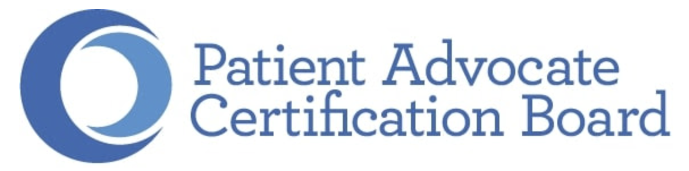
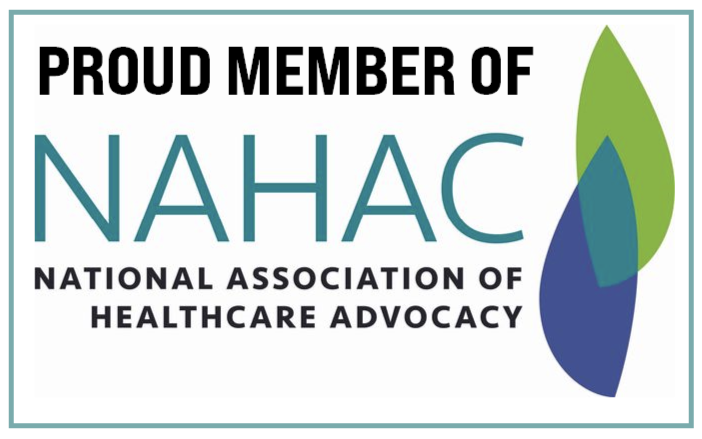
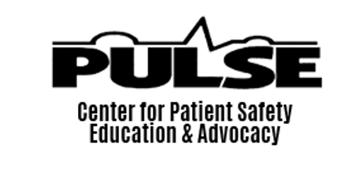
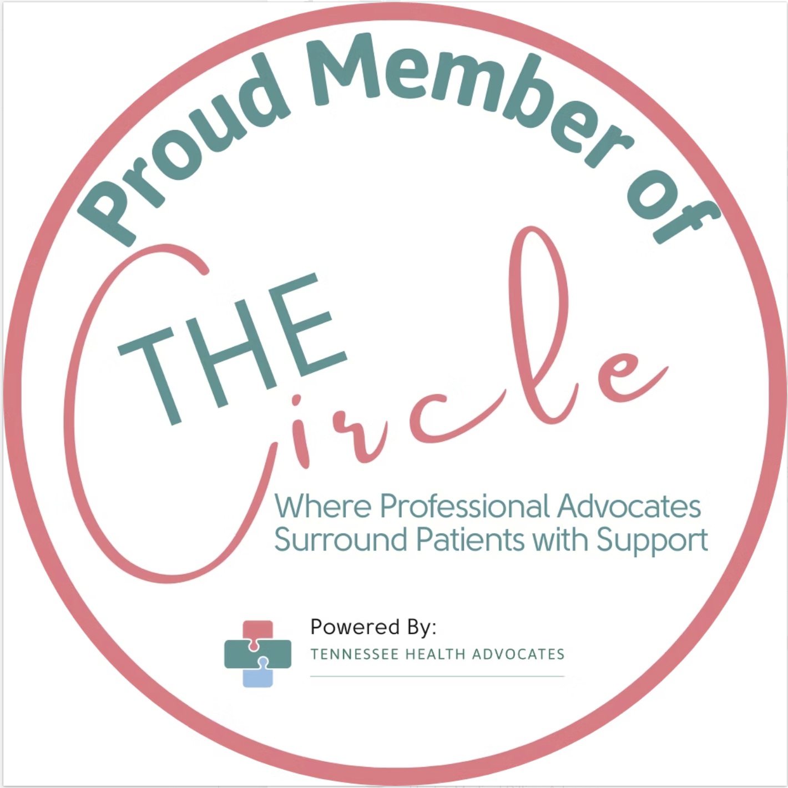

Getting started
- A free 20-minute intake to explain your needs and ask questions
- Share relevant medical history and current status
- Understand your options
- Get acquainted with the process of working together
Medical Crisis Manager
I help families navigate complex hospital stays, rehabilitation, and safe discharge.
Medical professional and board certified Patient Advocate (MS, MA, CCC-SLP, BCPA) working at all New York City hospitals.
Clinical experience and professional affiliations







What I do for you and your family
What patients & families say
Quotes edited for privacy and length; edits indicated by […]. Reviewers identified by first name and last initial.
Specilizations and clinical experience
More than a decade at the bedside in emergency departments, intensive care, step-down, and rehabilitation units.
Clinical & Community Education
I offer evidence-based talks on patient advocacy, navigating hospitalization, dysphagia, and cognitive-communication disorders for providers and community groups. Past audiences include DOROT, Pulse Center for Patient Safety, HealthAdvocateX, National Association of Healthcare Advocacy, Sunrise Senior Living, the Brain Injury Association of America, JCC Manhattan, and SAGE, among others.
Inquire about a talkContact
To schedule a free 20-minute initial consultation or inquire about services, send a message below.
Need help urgently? Text, call, or email directly: (917) 283-2765 · Shlomit@PatientPathNYC.com